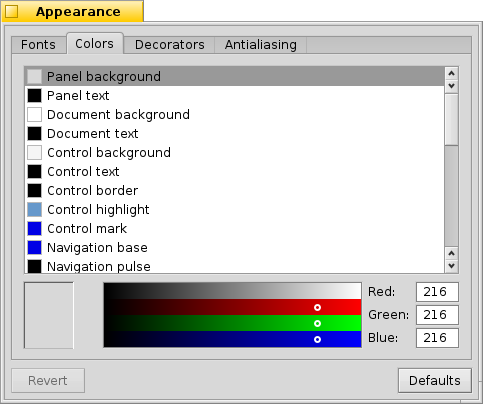

Aparência
Aparência
| Deskbar: | ||
| Localização: | /boot/system/preferences/Appearance | |
| Definições: | ~/config/settings/system/app_server/appearance ~/config/settings/system/app_server/fonts |
As preferências de aparência permitem a modificação de certas características visuais do Haiku.
 Fontes
Fontes

O Haiku define três fontes padrão para diferentes propósitos. Pode-se definir tipos de fontes planas, negrito e fixas e tamanhos que serão utilizados em todo o sistema. Além disso, existe também uma definição separada para aos fontes usadas nos menus.
Instalando novas fontes
Novas fontes que não vêm como parte de um pacote .hpkg regular podem ser instaladas copiando-as dentro de uma subpasta, de acordo com o tipo da fonte (psfonts ou ttfonts) dentro de sua respectiva pasta non-packaged (veja o tópico Disposição do sistema de arquivos). Para fontes TrueType devem ser:
| /boot/system/non-packaged/data/fonts/ttfonts/ | para fontes disponíveis a todos os usuários. | |
| /boot/home/config/non-packaged/data/fonts/ttfonts/ | para fontes disponíveis apenas para si mesmo. |
Cores

Na guia , pode-se mudar as cores de diferentes partes da interface de usuário. A cor aceita arrastar e soltar de outros programas, permitindo arrastar cores, por exemplo, do WonderBrush, Icon-O-Matic ou da caixa de diálogo do Papel de Parede.
Decoração de janelas

Decoração determina a aparência de janelas e todos os elementos da interface de usuário. Atualmente o Haiku vem com apenas uma decoração padrão. Se localizar e instalar outras decorações, pode-se escolher um diferente a partir do menu pop-up.
Haiku's default decorator lets you set the arrow style of the scroll bar: either single arrows at the end of scrollbars to conserve a bit of space, or double arrows — the traditional BeOS way — potentially saving some mouse moving when scrolling up and down or left and right...
Antisserrilhamento

A guia oferece diferentes definições sobre como as coisas são renderizadas na tela.
Sugestão de glifo
Uma ativada alinha todas as letras de tal modo que suas bordas verticais e horizontais fiquem exatamente entre dois pixels. O resultado é um contraste perfeito, especialmente ao lidar com preto sobre branco. O texto aparece mais nítido. Existe também uma definição para que é especialmente útil em dispositivos com baixa resolução como netbooks. Fontes pequenas podem ficar muito ruins quando a alusão está ligada, mas com esta definição ainda terá a vantagem da alusão para editores de texto e o Terminal.
Veja a diferença que a alusão produz com estas telas ampliadas:
 Sugestão: desligada |  Sugestão: ligada |
Deve-se salientar que todas as janelas de Ampliação nesta página são naturalmente processadas com as diferentes opções apresentadas. Então, tenha uma impressão real das definições pela comparação, por exemplo, com o título em negrito da guia amarela ou o texto "33 x 15 @ 8 pixels/pixel".
Tipo de antisserrilhamento
Outra técnica para melhorar a renderização é o Antisserrilhamento, que suporta todos os gráficos vetoriais assim como texto. Ele suaviza as linhas pela mudança de cor de certos pixels. Existem dois métodos para isso:
muda a intensidade dos pixels nas bordas.
faz um trabalho ainda melhor, especialmente com monitores LCD (alta resolução). Ao invés da intensidade de um pixel, Ele muda sua cor, o que move uma borda por uma fração de um pixel, porque telas LCD produzem cada pixel com um componente vermelho, verde e azul.
Novamente, os dois diferentes métodos com telas ampliadas:
Escala de cinza, Sugestão: desligada | Subpixel LCD, Sugestão: desligada |
Antisserrilhamento baseado em subpixel adiciona um suave brilho colorido aos objetos. Algo não tolerado por todos. No Haiku pode-se misturar os dois métodos de antisserrilhamento e encontrar a definição certa pelo uso de um botão deslizante.
Se ativar a sugestão mais a renderização por subpixel LCD pela mudança da fonte e recompilar, esta é a aparência comparada com a sugestão com Escala de cinza:
Escala de cinza, Sugestão: ligada | Subpixel LCD, Sugestão: ligada |
Na base da caixa de diálogo estão dois botões:
| redefine tudo para os valores padrão. | ||
| traz de volta as definições que estavam ativas quando iniciou as preferências da Aparência. |